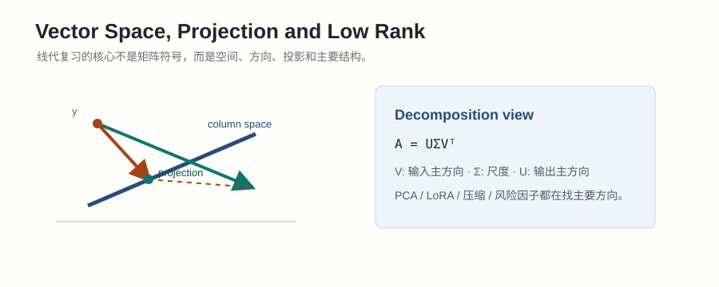

#007. 线性代数三：特征值、SVD、PCA 与正定矩阵

#学习目标与概念起点
这一章要回答一个核心问题：一个矩阵到底“主要在什么方向上起作用”？前两章把矩阵看成线性变换、子空间和投影；本章进一步把矩阵拆成若干个主方向。特征值、SVD、PCA、正定性和条件数看起来是不同术语，本质上都在讨论方向、缩放、曲率和信息强弱。
学习目标
- 能解释 \(Av=\lambda v\) 的每个符号，并能手算简单 \(2\times2\) 矩阵的特征值和特征向量。
- 能说明为什么实对称矩阵特别好：特征值为实数，特征向量可以正交，能写成 \(Q\Lambda Q^T\)。
- 能区分正定和半正定，并把它们连接到协方差矩阵、Hessian 曲率和优化稳定性。
- 能读懂 \(A=U\Sigma V^T\)，知道奇异值、低秩近似和 PCA 的关系。
- 能说明条件数为什么会放大误差，以及它在最小二乘、协方差估计、训练稳定性里的意义。
概念起点
矩阵乘向量 \(Ax\) 可以理解成把向量 \(x\) 变换到新位置。多数方向会被旋转、拉伸、压缩到另一个方向；但有些特殊方向经过变换后仍然沿着原来的直线，只是长度变了。这些方向就是特征向量，对应的缩放倍数就是特征值。
为什么需要谱结构
只看矩阵元素很难判断整体行为。谱结构把矩阵改写成“方向 + 强度”：哪些方向变化最大，哪些方向几乎没信息，哪些方向曲率很陡，哪些方向会导致数值不稳定。面试里很多问题都可以用这套语言解释。
#特征值与特征向量
特征向量是矩阵变换下方向不变的非零向量。特征值是这个方向上的缩放倍数。公式写作：
\(A\)：一个方阵，因为输入和输出必须在同一个空间里，才谈得上“方向是否不变”。
\(v\)：特征向量，是一个方向。它不能是零向量，因为零向量没有方向。
\(\lambda\)：特征值，是缩放倍数。若 \(\lambda=3\)，这个方向长度变成 3 倍；若 \(\lambda=-1\)，方向翻转；若 \(\lambda=0\)，这个方向被压扁到零。
如何读公式：\(Av=\lambda v\) 读成“矩阵 \(A\) 作用在方向 \(v\) 上，结果仍在 \(v\) 这条直线上，只是乘了 \(\lambda\)”。
求特征值的标准做法，是把 \(Av=\lambda v\) 改写成 \((A-\lambda I)v=0\)。如果存在非零解 \(v\)，那么矩阵 \(A-\lambda I\) 必须把某个非零方向压到零，这说明它不可逆，行列式为 0：
这里 \(I\) 是单位矩阵，作用类似数字里的 1。公式 \(A-\lambda I\) 的意思是：从矩阵 \(A\) 的对角线上减去 \(\lambda\)。解出 \(\lambda\) 后，再把每个 \(\lambda\) 代回 \((A-\lambda I)v=0\) 求对应方向。
直觉：特征值不是“矩阵里的某个元素”，而是矩阵对某些特殊方向的整体效果。面试中如果问“最大特征值代表什么”，不要只说“最大的根”，要说它代表矩阵在某个主方向上的最大伸缩、方差或曲率，具体含义取决于矩阵是什么。
#2x2 特征值完整例题
例题：求矩阵的特征值和特征向量
给定矩阵：
这个矩阵会把二维向量做线性变换。我们要找哪些方向经过 \(A\) 后仍然不改变方向，以及这些方向被放大多少。
第一步：写特征方程。
令行列式为 0：
第二步：求 \(\lambda_1=3\) 的特征向量。代回 \((A-3I)v=0\)：
设 \(v=(x,y)^T\)，方程给出 \(-x+y=0\)，所以 \(y=x\)。可以取：
检查一下：
第三步：求 \(\lambda_2=1\) 的特征向量。代回 \((A-I)v=0\)：
方程给出 \(x+y=0\)，所以 \(y=-x\)。可以取：
检查一下：
结论：方向 \((1,1)\) 被放大 3 倍，方向 \((1,-1)\) 保持长度不变。这个矩阵沿着“两个坐标同涨同跌”的方向更强，沿着“一个涨一个跌”的方向较弱。
连接到数据：如果这个矩阵是协方差矩阵，那么 \((1,1)\) 是共同波动方向，方差更大；\((1,-1)\) 是相对价差方向，方差更小。如果它是 Hessian，那么 \((1,1)\) 方向的曲率更陡，优化时更容易因为步长过大而震荡。
#对称矩阵与正交对角化
实对称矩阵满足 \(A=A^T\)。它是线性代数里最舒服的一类矩阵，因为它可以被一组互相正交的特征向量完全描述：
\(Q\)：由单位特征向量组成的正交矩阵。正交意味着 \(Q^TQ=I\)，也就是这些方向两两垂直且长度为 1。
\(\Lambda\)：对角矩阵，对角线上放着特征值 \(\lambda_1,\lambda_2,\dots,\lambda_n\)。
\(Q^T\)：先把向量从原坐标系转到特征向量坐标系。
\(\Lambda\)：在每个特征方向上分别缩放。
\(Q\)：再把结果转回原坐标系。
所以 \(A=Q\Lambda Q^T\) 可以读成：“先换到主方向坐标系，在每个主方向上按特征值缩放，再换回来”。这就是谱分解。它把一个复杂矩阵变成了一组彼此独立的方向和强度。
为什么对称矩阵常见：协方差矩阵 \(\Sigma\) 是对称的，因为 \(\operatorname{Cov}(X_i,X_j)=\operatorname{Cov}(X_j,X_i)\)；Hessian \(H\) 在常见光滑条件下也是对称的，因为二阶偏导顺序可以交换。于是 PCA、风险模型、二阶优化都大量使用对称矩阵的谱分解。
#正定、半正定与曲率
正定性讨论的是二次型 \(x^TAx\) 的符号。这里 \(x^TAx\) 可以理解为：沿着方向 \(x\) 看矩阵 \(A\) 给出的“能量、方差或曲率”。
如果 \(A\) 是对称矩阵，那么正定性可以直接看特征值：
正定：所有特征值都大于 0。
半正定：所有特征值都大于等于 0，允许某些方向特征值为 0。
不定：既有正特征值又有负特征值，说明某些方向向上弯，某些方向向下弯。
协方差矩阵一定半正定。设随机收益向量为 \(R\)，协方差矩阵为 \(\Sigma\)。任意权重 \(x\) 组成的组合收益是 \(x^TR\)，它的方差为：
方差不可能为负，所以协方差矩阵不会有负特征值。如果某个特征值为 0，表示存在一个线性组合完全没有波动，通常说明特征冗余、样本太少或资产之间存在精确线性关系。
Hessian 也可以用正定性理解。对损失函数 \(L(w)\)，Hessian \(H\) 描述局部二阶曲率。若在某点 \(H\) 正定，附近像一个碗，通常是局部最小点；若半正定，则某些方向可能很平；若不定，则可能是鞍点。
如何读 Taylor 里的 Hessian 项：\(\Delta w^TH\Delta w\) 问的是“沿着参数变化方向 \(\Delta w\)，loss 会弯得多厉害”。Hessian 最大特征值对应最陡曲率方向，最小特征值对应最平坦方向。训练神经网络时，曲率很不均衡会让统一学习率变得难选。
#SVD 与低秩近似
特征分解主要适用于方阵，尤其是对称方阵。但现实中很多矩阵不是方阵：样本数和特征数不同，用户数和物品数不同，token 数和 embedding 维度不同。SVD 解决的是“任意矩阵如何拆成主方向”的问题。
\(A\)：原矩阵，可以是 \(m\times n\)。
\(V^T\)：把输入向量投到一组右奇异方向上。
\(\Sigma\)：按奇异值 \(\sigma_1\ge\sigma_2\ge\cdots\ge 0\) 缩放。奇异值越大，说明这个方向的信息或能量越强。
\(U\)：把缩放后的坐标放到输出空间的一组左奇异方向上。
如果 \(A\) 的大部分信息集中在前几个奇异值上，就可以只保留前 \(k\) 个方向，得到低秩近似：
这里 \(u_i v_i^T\) 是一个 rank-1 矩阵，可以理解为“一个输出方向乘一个输入方向”。前 \(k\) 项相加，就是用 \(k\) 个最重要的方向近似原矩阵。
例题：为什么只保留最大奇异值可以压缩矩阵
假设一个矩阵的奇异值是 \(10,2,0.5,0.1\)。这说明第一方向的强度远大于后面几个方向。如果只保留 rank-1 近似，就保留 \(\sigma_1=10\) 对应的 \(u_1v_1^T\)；如果保留 rank-2，就再加上 \(\sigma_2=2\) 对应的方向。
rank-1 近似为：
rank-2 近似为：
直观上，\(A_1\) 保留最大结构，\(A_2\) 再补一个次重要结构。较小奇异值对应的方向可能是细节、噪声或弱信号。截断 SVD 的关键性质是：在所有 rank-\(k\) 矩阵中，它给出平方误差意义下最好的近似。
LoRA 连接：LoRA 把大模型权重更新 \(\Delta W\) 限制成低秩形式，例如 \(\Delta W=BA\)，其中 \(B\) 和 \(A\) 的中间维度很小。它不是直接做 SVD，但思想相通：很多任务适配可能主要发生在少数重要方向上，不必更新完整高秩矩阵。
#PCA、协方差与主方向
PCA 要解决的问题是：高维数据里哪些方向最能解释样本变化？做 PCA 前通常先中心化数据，也就是每一列减去均值。中心化后的数据矩阵记为 \(X\)，每一行是一个样本。样本协方差矩阵可以写成：
协方差矩阵的特征向量就是数据的主方向，特征值就是这些方向上的方差。第一主成分定义为所有单位方向中投影方差最大的方向：
这个公式的读法是：从所有长度为 1 的方向 \(u\) 中，找一个方向，使数据投影到这个方向后的方差 \(u^T\Sigma u\) 最大。约束 \(\|u\|=1\) 很重要，否则把 \(u\) 任意放大，目标值也会被任意放大。
例题：从协方差矩阵看 PCA 主方向
假设二维数据中心化后，协方差矩阵为：
上一节已经算过，它的特征值是 \(3\) 和 \(1\)，对应方向分别是 \((1,1)\) 和 \((1,-1)\)。
第一主方向：把 \((1,1)\) 单位化：
该方向上的方差是 \(\lambda_1=3\)。这说明数据沿着“两个坐标一起增加或一起减少”的方向变化最大。
第二主方向：把 \((1,-1)\) 单位化：
该方向上的方差是 \(\lambda_2=1\)。如果只用一维表示数据，PCA 会保留 \(u_1\)，因为它解释的方差更多。
解释方差比例：
所以第一主成分解释了总方差的 75%。这不是说它解释了所有语义，只是说它解释了线性方差中的 75%。
PCA 还有另一个等价解释：如果只能用 \(k\) 维子空间重构数据，PCA 选择让平方重构误差最小的子空间。因此 PCA 同时可以被看成“最大方差方向”和“最小重构误差方向”。
embedding 主方向：在 embedding 或隐藏状态分析里，PCA 可以找出激活变化最大的方向。例如某些主方向可能对应长度、频率、语种、主题或数据集偏差。但 PCA 只发现线性方差结构，不自动保证这些方向有清晰语义，解释时必须结合样本投影和对照实验。
#条件数与数值稳定
条件数衡量一个矩阵对输入误差的放大程度。对可逆矩阵 \(A\)，常见的 2-范数条件数为：
这里 \(\sigma_{\max}\) 是最大奇异值，\(\sigma_{\min}\) 是最小非零奇异值。条件数越大，说明矩阵在某些方向拉得很长，在另一些方向压得很扁。这样一来，反解问题会很敏感：输入里一点点噪声，可能在被压扁的方向上放大成很大的参数误差。
| 情形 | 谱结构 | 后果 |
|---|---|---|
| 条件数接近 1 | 各方向缩放比较均衡 | 求解相对稳定，误差不容易被严重放大 |
| 条件数很大 | 最大奇异值远大于最小奇异值 | 逆问题敏感，最小二乘系数可能剧烈变化 |
| 最小奇异值接近 0 | 某些方向几乎被压扁 | 矩阵接近低秩，显式求逆风险很高 |
在线性回归中，如果 \(X\) 的列高度相关，\(X^TX\) 会接近奇异，条件数变大。此时很小的数据扰动就可能导致系数大幅变化。ridge 正则化通过加上 \(\lambda I\) 改善谱结构：
这相当于把 \(X^TX\) 的每个特征值都往上抬 \(\lambda\)，让最小特征值不至于太接近 0，从而提升数值稳定性。代价是估计会带有偏差，但方差和不稳定性通常下降。
#LLM/量化面试连接
协方差矩阵与风险因子
量化里，资产收益协方差矩阵的最大特征方向常对应市场共同波动，后续方向可能对应行业、风格或价差结构。半正定性是基本要求，因为任意组合的方差不能为负。
Hessian 曲率与优化
Hessian 的特征值描述 loss 在不同参数方向上的曲率。最大特征值大，说明有陡峭方向；最小特征值小，说明有平坦方向。曲率跨度大时，固定学习率很难同时适配所有方向。
embedding 与激活主方向
PCA/SVD 可以分析 embedding 或隐藏状态的主变化方向。它们能帮助发现各向异性、公共方向、batch 偏差或语义聚类，但不能单独证明因果语义。
LoRA 与低秩更新
LoRA 假设任务适配的有效更新可以被低秩矩阵表达。面试里可以把它解释成：不是所有权重方向都同等重要，少量方向可能已经能承载主要任务变化。
面试追问：为什么 PCA 和 LoRA 都会提到“低秩”，但不是同一件事？
PCA 是一种数据分析方法，通常从中心化数据的协方差矩阵或数据矩阵 SVD 中找最大方差方向，用来降维、可视化或压缩。LoRA 是一种参数高效微调方法，把权重更新限制为低秩乘积 \(\Delta W=BA\)，用更少参数学习任务适配。二者共享“很多有效变化集中在少数方向”的低秩直觉，但 PCA 是从数据中提取方向，LoRA 是给训练参数施加结构约束。
#常见误区与检查清单
| 误区 | 为什么错 | 正确说法 |
|---|---|---|
| 特征向量就是任意被放大的向量 | 普通向量经过矩阵后通常会改变方向 | 特征向量要求方向不变，只允许缩放或翻转 |
| 所有矩阵都能正交对角化 | 正交对角化需要很强条件 | 实对称矩阵可以正交对角化；一般矩阵更常用 SVD |
| 正定等于所有元素为正 | 元素正负不能直接决定二次型符号 | 对称矩阵正定要看 \(x^TAx>0\) 或所有特征值为正 |
| PCA 找到的一定是语义方向 | PCA 最大化的是线性方差，不是语义可解释性 | 主方向需要结合样本、标签、干预或对照实验解释 |
| 条件数只是数学细节 | 条件数大时，求逆和回归系数会对噪声非常敏感 | 条件数是判断数值稳定性和正则化必要性的核心指标 |
- 我能把 \(Av=\lambda v\) 解释成“方向不变、长度缩放”，并说明 \(v\ne 0\) 的原因。
- 我能用 \(\det(A-\lambda I)=0\) 手算一个 \(2\times2\) 矩阵的特征值，再代回求特征向量。
- 我能说清楚对称矩阵为什么可以写成 \(Q\Lambda Q^T\)，以及 \(Q\)、\(\Lambda\)、\(Q^T\) 分别做什么。
- 我能区分正定和半正定，并能解释为什么协方差矩阵一定半正定。
- 我能把 Hessian 特征值解释成不同方向的 loss 曲率，而不是只背“二阶导矩阵”。
- 我能读懂 SVD 公式 \(A=U\Sigma V^T\)，并能解释奇异值越大代表该方向越重要。
- 我能说明 PCA 第一主成分是在单位方向中最大化投影方差，并能用特征值计算解释方差比例。
- 我能解释低秩近似和 LoRA 的共同直觉，也能说明 PCA 和 LoRA 的任务不同。
- 我能用 \(\kappa(A)=\sigma_{\max}/\sigma_{\min}\) 解释条件数大为什么会导致数值不稳定。